⚠️ Not compatible with generic ELM327 Bluetooth adapters or standard OBD2 car scanners — the protocol is K-line, not CAN bus.
Most GY6 EFI scooters sold in Europe from 2016 onwards carry a Delphi MT05 or MT05.2 ECU that exposes a K-line diagnostic interface through a 6-pin connector hidden under the seat. With a €5–10 adapter and the free HUD ECU Hacker software you can read and clear fault codes, monitor every live sensor, and even back up or reflash the ECU — directly from any Windows laptop.
This guide walks you through the complete setup: buying the right hardware, installing drivers, locating the scooter connector, and making your first live connection.
What You Need
Hardware
The connection chain is simple: scooter 6-pin connector → 6-pin-to-OBD2 adapter → OBD2 KKL USB cable → laptop. You need exactly two pieces of hardware:
| Item | Chip / Spec | Notes | Link |
|---|---|---|---|
| OBD2 KKL USB cable (VAG KKL 409.1) | FTDI FT232RL (essential) | Blue cable, K-line support. Avoid CH340 chips — they cause timeouts on K-line. | AliExpress → |
| 6-pin to OBD2 adapter | GY6 Delphi 6-pin female ↔ OBD2 16-pin male | Small short cable. Plugs scooter diag port into the KKL cable. | AliExpress → |
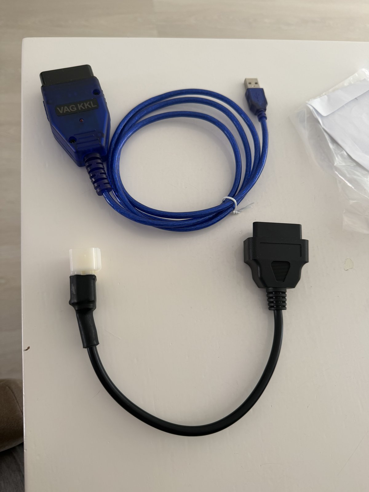
The two adapters you need: VAG KKL USB cable (blue) and the 6-pin scooter adapter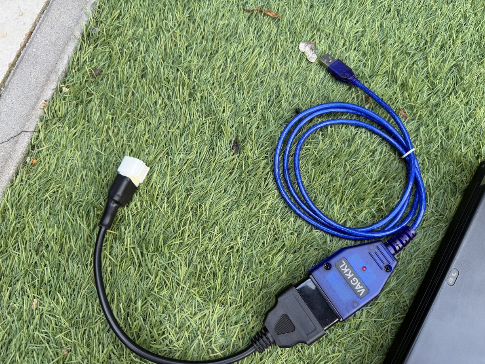
The full cable chain connected: 6-pin adapter → OBD2 → KKL → USB to laptop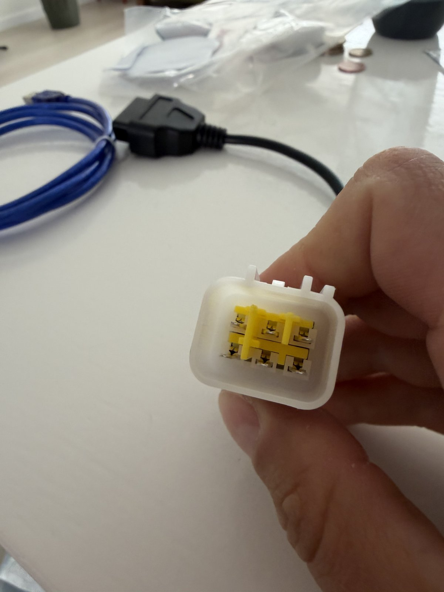
The 6-pin scooter diagnostic connector — white housing, yellow contacts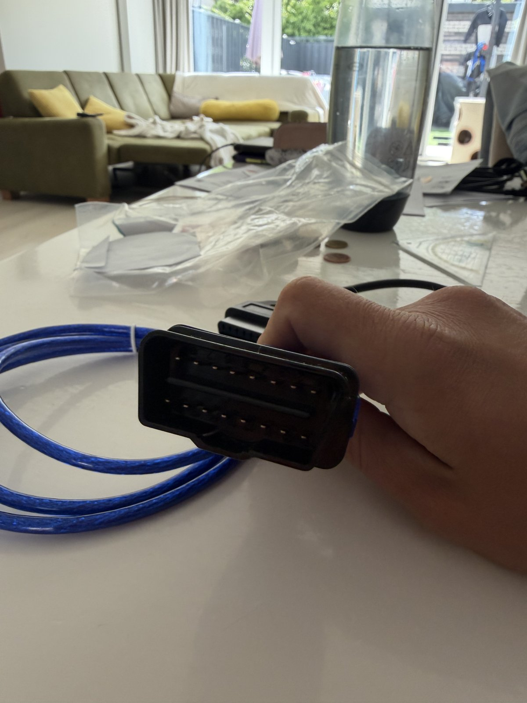
OBD2 16-pin plug on the adapter — this mates with the KKL cableSoftware (free)
- HUD ECU Hacker — free, Windows-only diagnostic suite for Delphi / Rongmao ECUs. Download from netcult.ch →
- FTDI VCP drivers — required before plugging in the KKL cable. Usually provided on CD with the KKL cable supplier, or download from ftdichip.com →
Setup Steps
Install the FTDI FT232RL Drivers
The KKL cable uses an FTDI FT232RL chip that appears to Windows as a virtual COM port (VCP). You must install the drivers before plugging in the cable, otherwise Windows may assign a generic driver that does not expose a COM port to HUD ECU Hacker.
- Download and install the FTDI VCP drivers. You have two options:
- From CD: Many KKL cable suppliers include driver files on a CD or in a download link. Check the package or supplier documentation first.
- From ftdichip.com: Go to ftdichip.com/drivers and download the official VCP Drivers for your version of Windows (Windows 7 / 8.1 / 10 / 11).
- Run the installer as Administrator and follow the prompts. Restart is usually not required.
- Now plug the KKL USB cable into your laptop. Windows should show a notification: "Device driver software installed successfully".
- Open Device Manager (
Win + X → Device Manager) and look under Ports (COM & LPT). You should see USB Serial Port (COMx). Note the COM number — you will need it in Step 5.
Download and Install HUD ECU Hacker
- Visit netcult.ch/elmue/HUD ECU Hacker and scroll to the download section. The software is free with no registration required.
- Download the latest installer (e.g.
HudEcuHackerSetup.exe). - Run the installer. Windows Defender SmartScreen may warn that the publisher is unknown — click "More info → Run anyway". The software has been widely used in the GY6 community since 2015.
- Launch HUD ECU Hacker. Do not connect the scooter yet — configure the software first.
Locate the 6-Pin Diagnostic Connector on Your Scooter
Open the scooter seat. On most GY6 EFI models the 6-pin diagnostic connector is located near the battery, in the under-seat compartment. It is a white or light-grey square connector, often capped with a rubber dust cover or small rubber plug.
On some models (e.g. BTC Riva, La Souris) the connector hangs loose near the battery terminals; on others it is cable-tied to the wiring loom beside the ECU. The connector is usually left unconnected when no diagnostic tool is attached — this is normal.
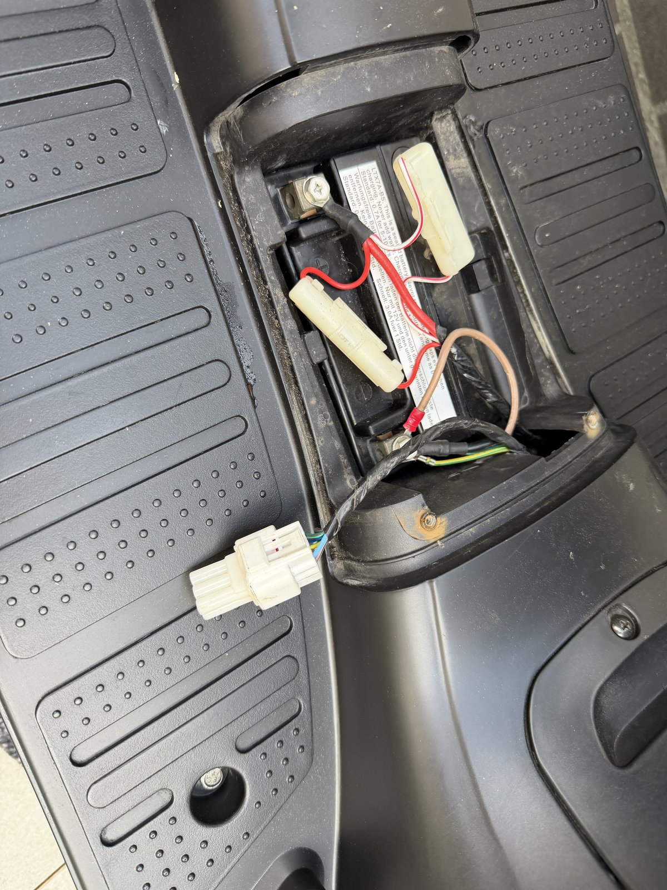
Under-seat area — the 6-pin connector is the white plug near the battery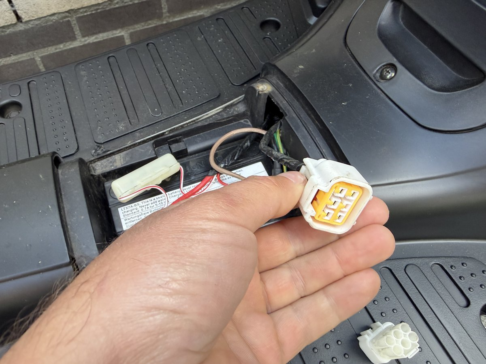
The 6-pin diagnostic plug — orange/yellow contacts, white housingConnect the Adapter Chain
- Plug the 6-pin end of the adapter cable into the scooter's diagnostic connector. It fits in one orientation only — do not force it.
- Connect the OBD2 end of the adapter to the OBD2 socket of the KKL cable.
- Plug the USB end of the KKL cable into your laptop.
- Turn the scooter ignition to ON (do not start the engine — key-on is sufficient).
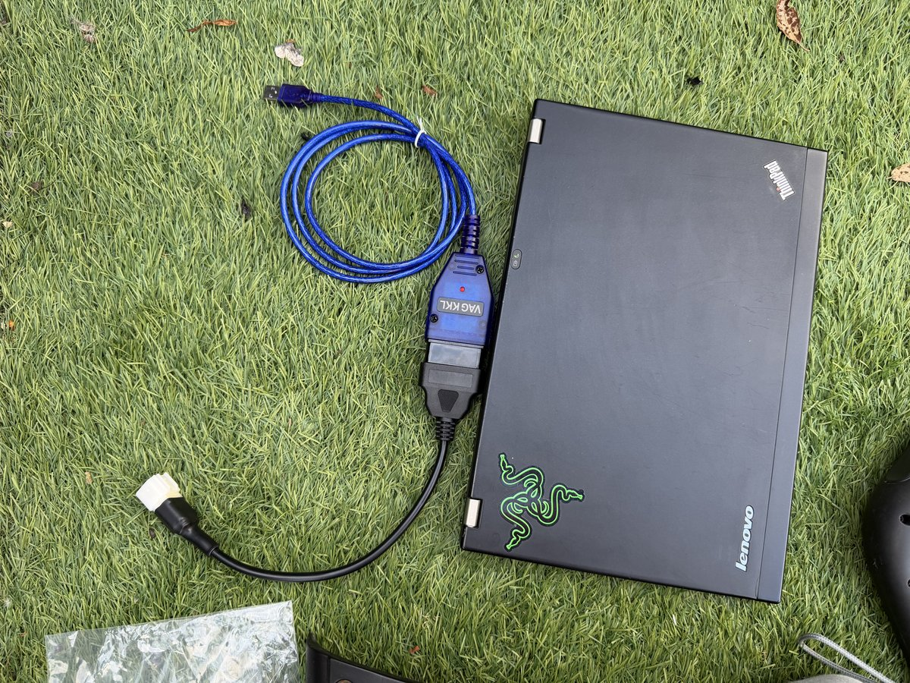
Cable connected to the laptop — USB end in, ready to plug into the scooter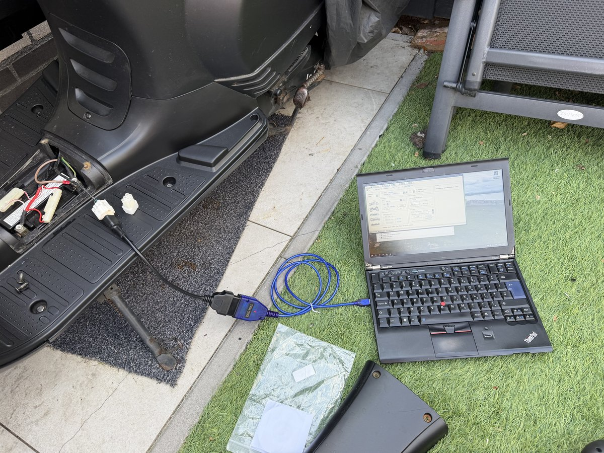
Full setup in the field — laptop next to the scooter, cable connected to the 6-pin portConfigure HUD ECU Hacker and Connect
- Open HUD ECU Hacker. In the Control tab, click ECU Model and select the correct ECU for your scooter:
- Delphi MT05 / MT05.2 — most GY6 EFI scooters sold in Europe (BTC Riva, La Souris, Santini, etc.)
- Rongmao MT05 — some Chinese-market and grey-import models
- Motion SE08 — certain Euro 5 models (2021+), though compatibility varies — see Caveats below
- From the COM port dropdown, select the port you noted in Step 1 (e.g.
COM3). If you see multiple ports, try each one until the connection succeeds. - Click Echo Test, then click Connect. You will see a stream of raw data in the Trace tab. If no red "Timeout" errors appear, the Echo Test passed.
- Click Echo Test again to toggle it off, then click Connect to establish a live session with the ECU.
- The status bar should now show Connected and a session timer.
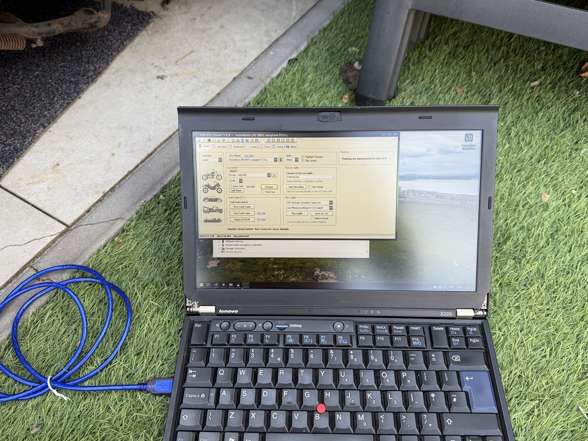
HUD ECU Hacker v5.8.8 — Control tab showing ECU model selector and Connect buttonRead Live Data and Fault Codes
Once connected you have access to all ECU data in real time. Key tabs:
- Dashboard — graphical overview of all sensor groups: engine, throttle, fuel, O2 sensors, temperatures.
- Data Grid — tabular view of every raw parameter: RPM, coolant temp, MAP pressure, IAT, throttle position, short/long term fuel trims, spark advance, vehicle speed, and more.
- DTC (Fault Codes) — read and clear stored Diagnostic Trouble Codes. On Euro 4 and later models, codes must be cleared with this tool — they do not auto-reset after the fault disappears.
- Graph — plot any parameter over time for intermittent fault diagnosis.
- Tuning — advanced: read/write ECU maps (only for experienced users).
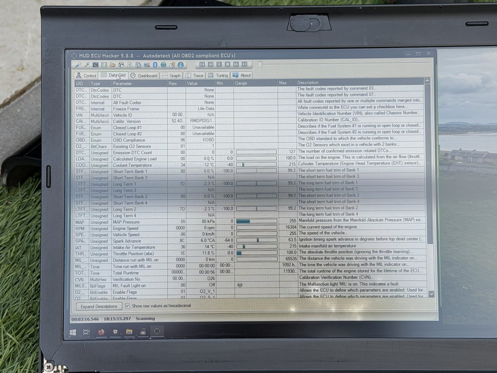
Data Grid — all live sensor values including coolant temp, MAP pressure and fuel trims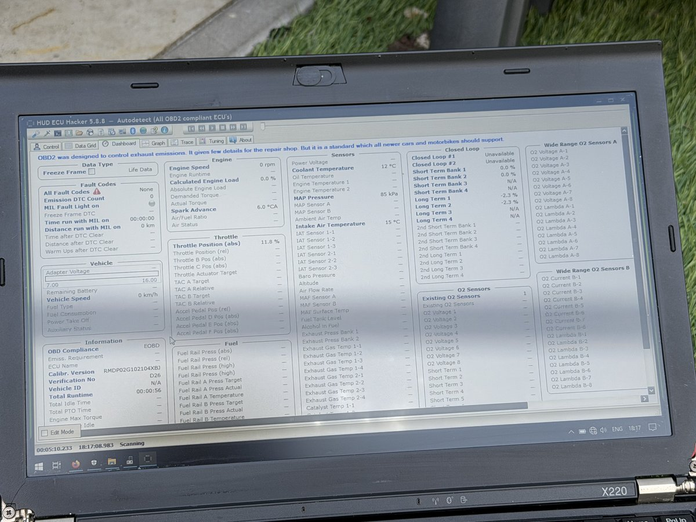
Dashboard view — all sensor groups visible simultaneously when connected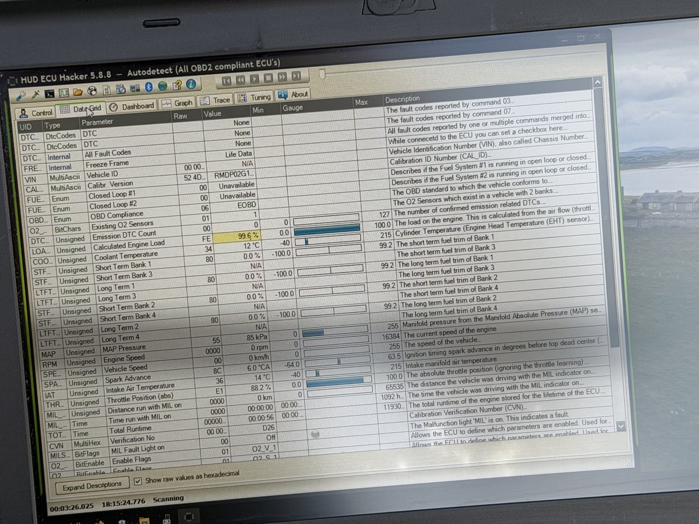
Data Grid with emission DTC count visible — O2 sensor status and closed-loop operationAdditional Reference Video
Video: "Testing HUD ECU Hacker — Lexmoto Titan" (2024) — real-world walkthrough on a Chinese EFI scooter with Delphi ECU. ↗ Watch on YouTube
Important Caveats
Based on community experience and forum reports, be aware of the following before you start:
- Generic OBD2 readers will not work. Many users with standard Bluetooth ELM327 scanners or generic car-OBD apps receive a "Vehicle not connected" error. This is because the GY6 ECU uses the K-line (ISO 9141-2 / KWP2000) protocol — not the CAN bus found in modern cars. Standard ELM327 dongles often lack K-line support or have incompatible timing. The OBD2 KKL cable with FTDI chip and HUD ECU Hacker together form a K-line-aware combination that actually works. Source: ScooterForum.net
- Euro 4 fault codes do not self-clear. From Euro 4 onwards, stored DTCs remain in the ECU memory even after the underlying fault is repaired. The engine warning light will stay on until you actively clear the codes with a diagnostic tool like HUD ECU Hacker. Simply fixing the problem is not enough — you must connect and erase the codes. Source: Gentlemen Riders
- Motion EFI (Euro 5, some 2021+ models) may not connect. Some newer scooters — particularly those with a Motion SE08 ECU introduced for Euro 5 compliance — use a proprietary protocol that HUD ECU Hacker cannot fully support. If your scooter was registered after 2021 and HUD ECU Hacker consistently fails to connect despite correct hardware and settings, check the ECU label. If it reads "Motion" or "SE08 E5", you likely need a dedicated Motion diagnostic scanner instead.
- Connection attempts may take multiple tries. K-line timing is extremely sensitive. It is normal for the first 5–15 connection attempts to time out. Simply return to the Control tab and click Connect again. If it never connects after 20+ attempts with the ignition on, try a different COM port or reduce the baud rate via the software's Troubleshooting settings.
- Never use the Tuning / Flash functions unless you know what you are doing. HUD ECU Hacker can read and write ECU flash memory and fuel maps. Incorrect values can make the scooter unrideable or damage the ECU. The diagnostic and DTC functions covered in this guide are safe; the Tuning tab is for experienced users only.
Troubleshooting
| Problem | Likely Cause | Solution |
|---|---|---|
| No COM port in Device Manager | FTDI drivers not installed, or Windows assigned a generic driver | Install the FTDI VCP driver from ftdichip.com, then replug the cable |
| HUD ECU Hacker doesn't show COM port | Cable not plugged in when software opened | Plug in the cable first, then start HUD ECU Hacker |
| "Timeout waiting for response" | K-line timing mismatch, or ignition not on | Ensure ignition is ON; retry Connect 10–20 times; if persistent, reduce baud rate in Troubleshooting settings |
| "Vehicle not connected" | Wrong ECU model selected, or incompatible adapter | Verify ECU model on the ECU label; confirm you have a KKL cable (not ELM327) |
| Connection drops after a few seconds | Poor USB connection or power fluctuation | Try a different USB port; connect directly to laptop (avoid USB hubs); check cable for damage |
| Software locks after licence dialog | Wrong tick boxes selected in the disclaimer | Fully uninstall HUD ECU Hacker, delete any remaining config files, and reinstall |
| Connects but no live data (all zeros) | Engine not running (some parameters only populate at idle) | Start the engine; MAP, RPM and O2 sensors only show values with the engine running |
| MIL (warning light) stays on after clearing codes | Fault is still present / recurring | The ECU re-sets the code because the fault was not actually fixed — diagnose and repair the root cause first |
Frequently Asked Questions
Does this work on macOS or Linux?
HUD ECU Hacker is Windows-only. It does not run natively on macOS or Linux. You can use a Windows virtual machine (VMware, Parallels, VirtualBox) and pass through the USB adapter — most users report this works well. Alternatively, keep an old cheap Windows laptop (like the Lenovo ThinkPad shown in the photos) dedicated to scooter diagnostics.
Can I use this on a Piaggio Vespa (Primavera, Zip, Sprint)?
No — Piaggio uses its own proprietary diagnostic interface (Piaggio Diagnostic Tool / PDT), not the Delphi K-line protocol used by GY6 clones. HUD ECU Hacker is specifically for Chinese GY6 EFI systems with Delphi or Rongmao ECUs.
Is HUD ECU Hacker really free?
Yes, HUD ECU Hacker is free for diagnostics (reading data, reading and clearing fault codes, monitoring sensors). Advanced features such as ECU flash and map editing are unlocked with a small paid licence. For the purposes of this guide — setting up, connecting, and reading/clearing codes — everything is free.
What fault codes are available on the GY6 Delphi ECU?
The Delphi MT05 reports standard OBD2 DTC codes plus some manufacturer-specific codes covering: oxygen sensor faults, coolant temperature sensor, throttle position sensor (TPS), MAP sensor, IAT sensor, injector circuit, IACV (idle air control), and ignition coil. Refer to our GY6 EFI CEL Flash Codes guide for a full list of codes and their meanings.
The 6-pin connector on my scooter looks different — could it still work?
There are a few variants of the GY6 diagnostic connector. The most common is the 6-pin white rectangular connector shown in this guide. Some models use a 4-pin connector or a different housing. If your connector doesn't match, check the ECU label to confirm it is a Delphi MT05 — if it is, the wiring pinout is the same and an adapter may still exist. Post on a GY6-specific forum with photos for community guidance.
Related Guides
- GY6 EFI CEL Flash Codes — Manual Diagnostic Mode — decode check-engine blink patterns without any tools
- GY6 EFI Fuel Injection Troubleshooting — systematic guide to injection faults
- All Repair Guides
HUD ECU Hacker — Official Site (netcult.ch) · GY6 Injectie Centrum — ECU Verbinden · FTDI Official Drivers · ScooterForum.net · Gentlemen Riders — Euro 4 OBD2
Last Updated: 2026-05-12 | License: CC BY-SA 4.0 | Have corrections or improvements? Submit feedback on GitHub